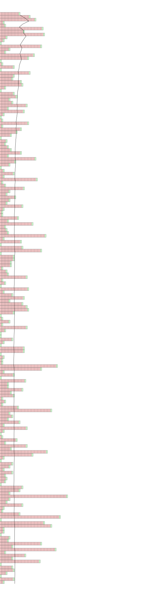

Calculate the expectation of a geometric random variable having parameter p
The Probability Distribution Function of a geometric variable is \[ E[x] = \underset{n}{\Sigma} np {(1-p)}^{n-1} : 0 \le n < \infty = \frac{1}{p}\]
Intuitively, this probability can be understood as follows. Let us consider the case of a coin toss and the
probability of whether it will be a heads or tails is 0.5 and 0.5. If you are interested in the outcome being heads,
1/0.5 = 2 would mean that in the long run, we would need to wait for two tosses for the outcome to be heads. This
does not imply however that the every-other toss is going to be favourable to you. But the outcomes match the
expected number in the long run.
We will now do a simulation to see how the outcomes match up.
In this case the probabilities of Failure and Success are 0.9 and 0.1 respectively. Each horizontal row of squares is a series of trials until a success is obtained. The red rectangles are the failures and the green rectangles at the each row is a success. Notices how over several of these sets of trials, the mean number of trials by the time it is a success is the expected is 10.

ClearAll[rect, geometric];
rect[number_, yLocation_, height_] :=
Piecewise[{{{Green, EdgeForm@Gray, Opacity@0.2, Rectangle[{0, yLocation}, {1, yLocation + height}]}, number == 1},
{Table[{Red, EdgeForm@Gray, Opacity@0.2, Rectangle[{r, yLocation}, {r + 1, yLocation + height}]}, {r, 0, number - 2}]
~Join~{Green, EdgeForm@Gray, Opacity@0.2, Rectangle[{number - 1, yLocation}, {number, yLocation + height}]}, number > 1}}]
accumulatingMean[list_List] := N@Accumulate[list]/Range[Length@list]
geometric[p_, no_] :=
Module[{data = Differences[Union @@ Position[RandomChoice[{p, 1 - p} -> {0, 1}, no], 1]], means},
means = accumulatingMean[data];
Graphics[{
Table[rect[data[[n]], -n, 1], {n, 1, Length@data}],
Line[Table[{means[[n]], -n}, {n, 1, Length@means}]]}
, ImageSize -> 756
, AspectRatio -> Length@data/Max@data
, PlotRange -> {{0, 100}, All}
]
]
Export[StringReplace[NotebookFileName[], ".nb" -> "_" <> ToString[#] <> ".svg"], geometric[#, 2000]] & /@ {0.9, 0.95}